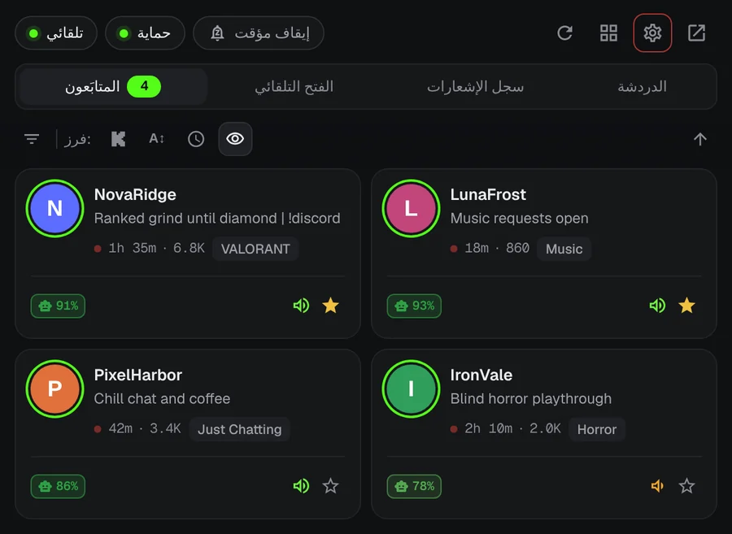
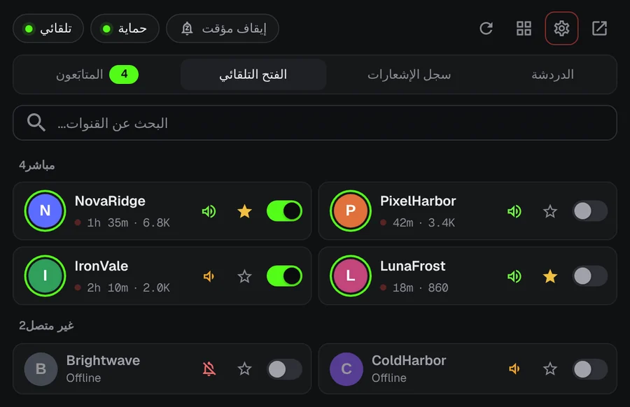
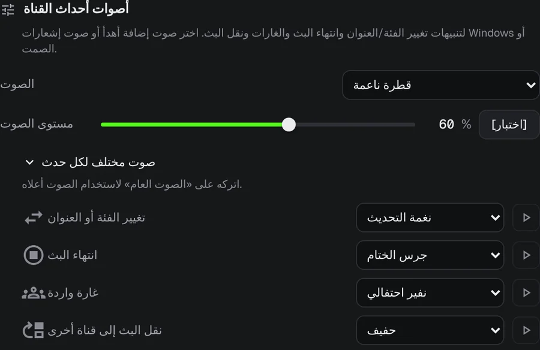
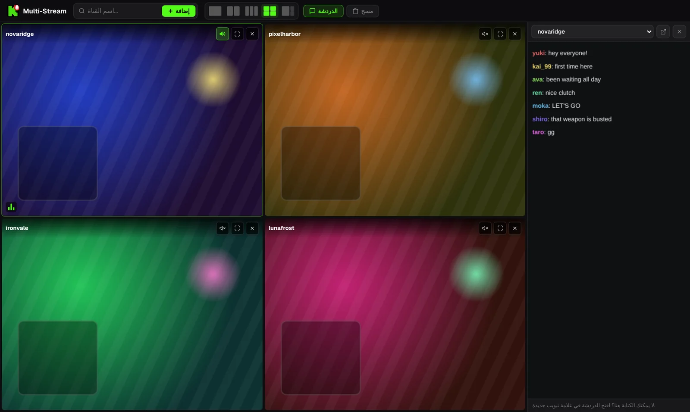

لا تفوّت بداية بث على Kick بعد اليوم.
صانع المحتوى المفضل لديك يبدأ البث في الثالثة فجرًا. يرسل KickAlert إشعارًا على سطح المكتب في تلك اللحظة، حتى دون فتح علامة تبويب Kick. مجاني، بلا حد لعدد القنوات وبلا تتبع.
قريبًا على Edge وOpera
 KickAlert
KickAlertجرّبه. اضغط على أحد الأجراس.
هذه القنوات غير متصلة الآن. فعّل الجرس لإحداها وشاهد ما يحدث عندما يبدأ البث.
تنبيهات فورية
يستمع KickAlert إلى اتصال Kick المباشر، فيصلك التنبيه لحظة بدء البث لا بعد دقائق. اختر صوتًا لكل قناة، أو اضبط أوقات عدم الإزعاج، أو أوقف كل شيء مؤقتًا حتى الصباح.

الفتح التلقائي
اختر القنوات التي تُفتح من تلقاء نفسها. يُفتح البث في علامة تبويب جديدة فور بدئه دون تكرار، ويمكن أن تُغلق علامة التبويب إذا نقلت غارة البث إلى قناة أخرى.

اعرف ما الذي حدث
يمكن أن يكون للغارات وانتهاء البث وتغيير الفئة والبث المنقول تنبيه خاص وصوت خاص لكل قناة.

رادار الدردشة
احصل على إشعار عندما يظهر اسمك أو كلمة تختارها في دردشة ما يصل إلى 5 قنوات، حتى وKick مغلق. تخفي مرشحات الدردشة الرسائل المزعجة وتلتقط الكلمات المكتوبة بحروف متشابهة.
حتى أربعة بثوث في علامة تبويب واحدة
تبدأ البثوث مكتومة. شغّل صوت البث الذي تريده بنقرة واحدة. والدردشة في لوحة جانبية.

محتوى البث للتوضيح فقط.
بياناتك تبقى في متصفحك
- لا تحليلات ولا تتبع
- يتواصل مع kick.com فقط
- شرح كل إذن عند التشغيل الأول
- الشيفرة المصدرية متاحة على GitHub
أسئلة شائعة
هل KickAlert مجاني؟
نعم. كل الميزات مجانية، ولا حد لعدد القنوات التي تتابعها.
هل يجب أن يبقى Kick مفتوحًا؟
لا. يعمل KickAlert في الخلفية ويرسل الإشعارات حتى دون أي علامة تبويب Kick مفتوحة. يكفي أن تكون مسجّل الدخول إلى Kick في المتصفح نفسه.
قمت بتثبيته لكن لا تصلني إشعارات.
تبدأ التثبيتات الجديدة بتنبيهات القنوات مطفأة حتى لا تغرق بالإشعارات. فعّل الجرس للقنوات التي تريدها، أو لكل القنوات دفعة واحدة من الإعدادات. ويُظهر فحص «هل ستصلك تنبيهات من هذه القناة؟» في إعدادات كل قناة أي سبب آخر قد يمنع التنبيه.
على أي متصفحات يعمل؟
على Chrome وFirefox حاليًا، وEdge وOpera في الطريق. ويمكن لمتصفحات Brave وVivaldi وغيرها من متصفحات Chromium تثبيته من سوق Chrome الإلكتروني.
ثبّت KickAlert
قريبًا على Edge وOpera